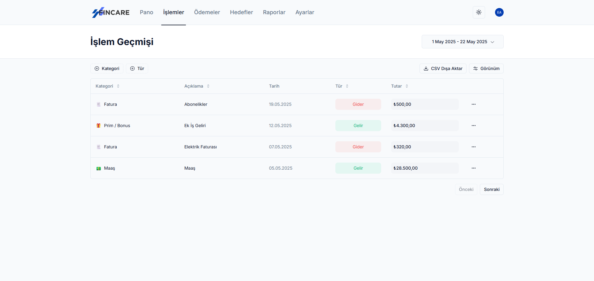
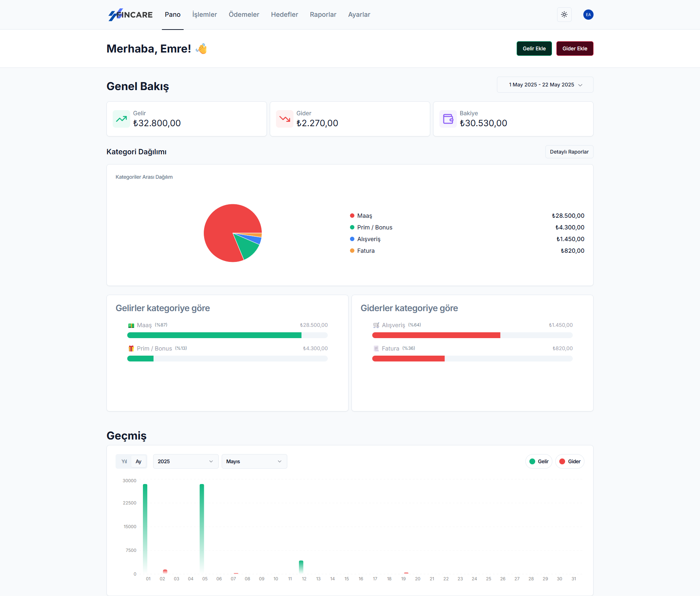
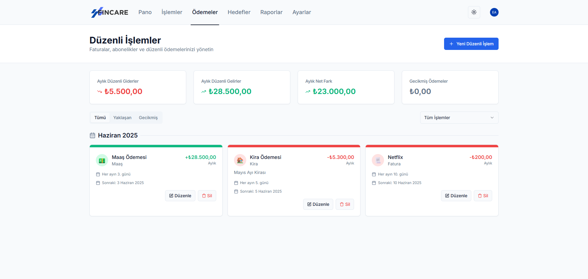
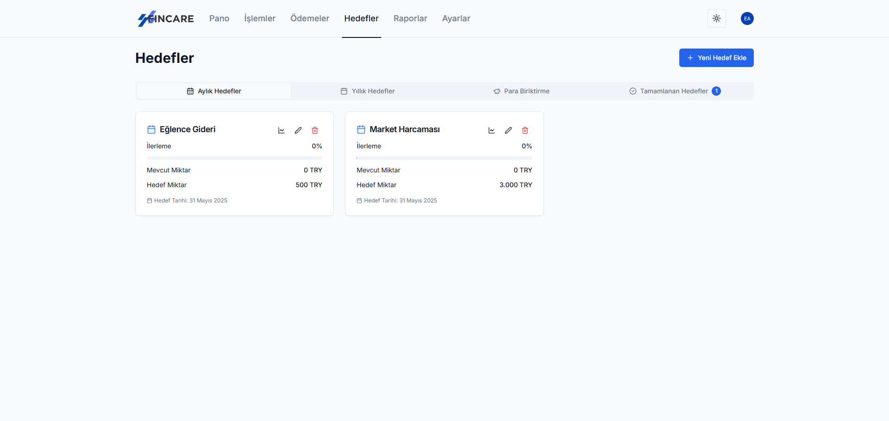
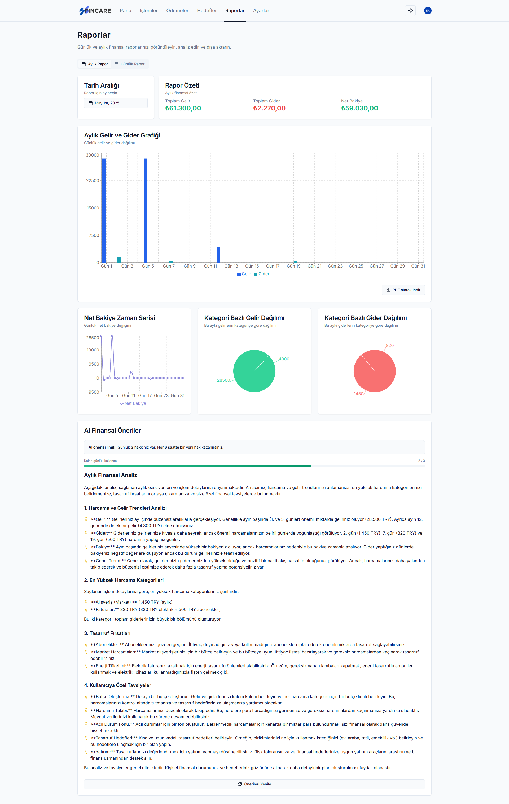
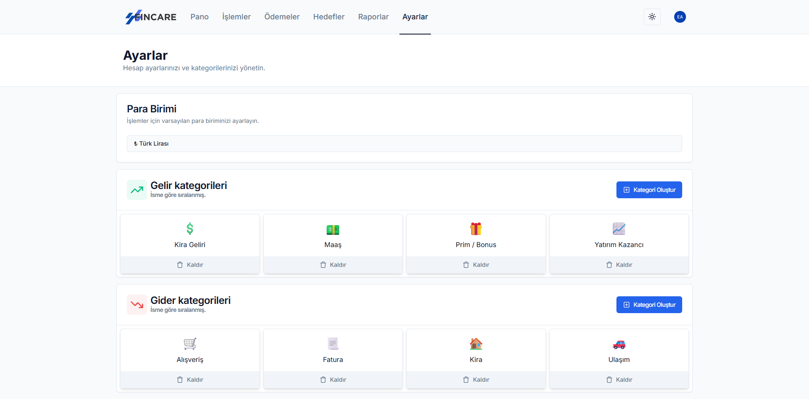

Every transaction, in your own categories
Add income or an expense with an amount, a date, a note and an emoji category you created. The table sorts and filters by category and type, and exports to CSV.

Fincare is an open-source personal finance tracker. Log income and expenses in categories you define, keep an eye on bills and savings goals, and get monthly reports with suggestions from Gemini.
Free and MIT licensed. The interface is in Turkish for now.

These are screenshots of the running app, with sample data.
Add income or an expense with an amount, a date, a note and an emoji category you created. The table sorts and filters by category and type, and exports to CSV.

Track weekly, monthly or yearly bills, subscriptions and recurring income. Separate views show what's coming up and what's overdue.

Set monthly, yearly or savings goals with a target amount and date, update your progress and see how much is left.

Daily and monthly reports with bar, line and pie charts. Export them to PDF with the charts included, or to CSV. Gemini reads the period and points out where you could save.

Pick USD, EUR, GBP, JPY, INR or TRY, manage your income and expense categories, and switch between light and dark themes.

You need Node.js 20 or newer, a PostgreSQL database and a free Clerk app. A Gemini key is optional.
git clone https://github.com/erenemrearik/fincare.git
cd fincare
npm install
cp .env.example .env # add your database and Clerk keys
npx prisma migrate deploy
npm run devFincare is developed in the open. If it's useful to you, a star on GitHub helps other people find it, and issues and pull requests are welcome.